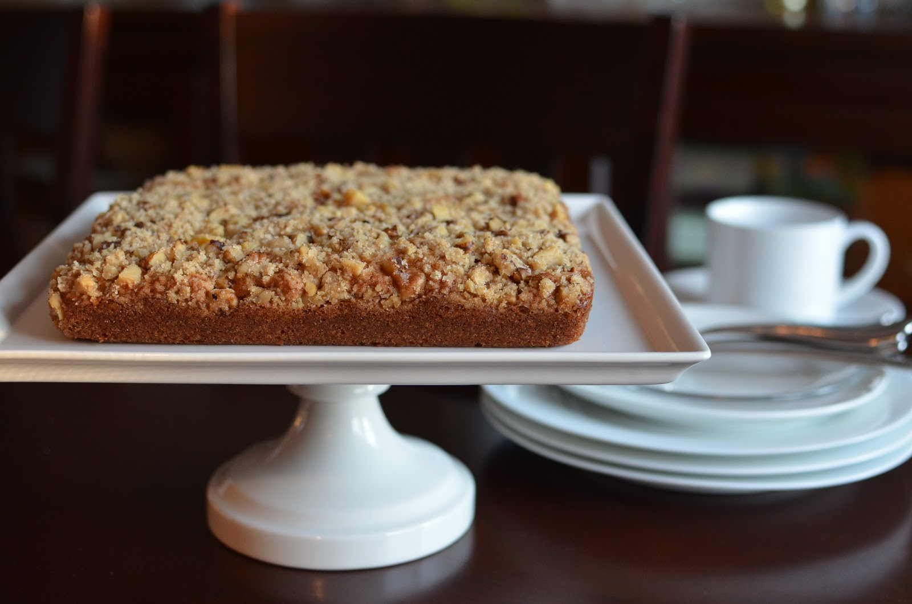

Coffee Cake

A simple and easy recipe for coffee cake
- Prep time: 10min
- Cook time: 30min
- Total time: 40min
- Serves 6
Ingredients
Streusel
- 2/3 cup Original Bisquick
- 2/3 cup packed brown sugar
- 1 tsp ground cinnamon
- 4 tbsp firm butter or margarine
Cake
- 2 cup, 2 tbsp Original Bisquick
- 3/4 cup milk
- 2 tbsp sugar
- 1 egg
Steps to prepare
- heat oven to 400 degrees
- Stir together the cake ingredients. Pour into a 9in square glass pan.
- Stir together the streusel ingredients. Roll into 1in balls and place them in the batter or put streusel mixture on top of the batter and slightly mix in or swirl into the batter with a butter knife.
- Bake for 20-30. Use toothpick to ensure batter is cooked fully.
- Enjoy!